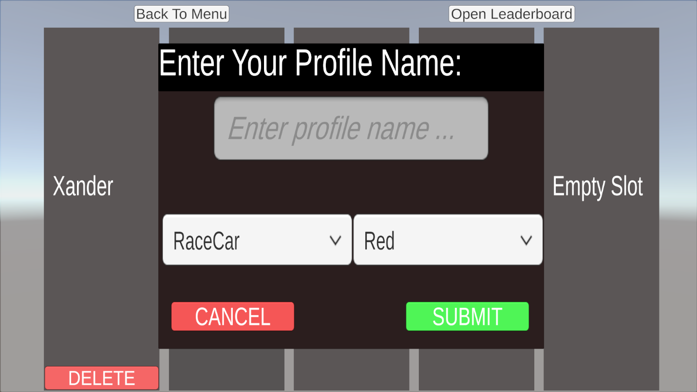
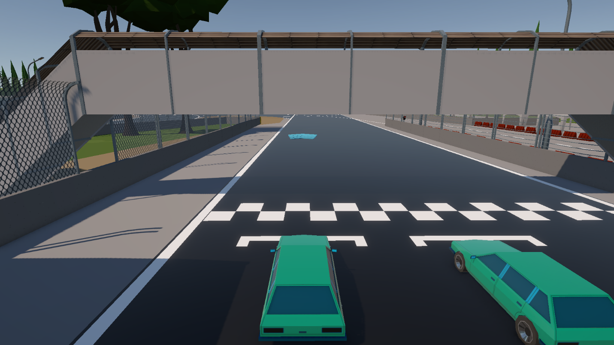

Overview
This is a simple racing game where the player completes one lap around a track. The game saves the best time and plays it back as a ghost car.
Unity · Save Systems · Ghost Car
A racing prototype focused on saved profiles, best times, leaderboards, and ghost car playback.


This is a simple racing game where the player completes one lap around a track. The game saves the best time and plays it back as a ghost car.
I focused on data saving, profile creation, best-time management, and leaderboard functionality.
The main challenge was saving and managing data cleanly across profiles and sessions.
I learned how much I enjoy building data-driven systems like profiles, saved times, and ghost replays.
Add a technical diagram for how ghost car playback works.